日语语法新思维
Table of Contents
1 基础知识
1.1 语法基本概念
1.1.1 语法词
| 体言 | 名词 |
|---|---|
| 代词，又称「代名词」 | |
| 用言（谓语词） | 动词 |
| 形容词 | |
| 助动词 | |
| 助词 | 格助词，接在名词后 |
| 接续助词，接在谓语词后 |
1.1.2 语法结构
日语被称为「黏着语」或「胶着语」，即一个辅助性的词（助词）黏着在一个实质性的词（名词或动词）的后面来表示其意思的语言。因此日语语法的关键在助词和搭配。
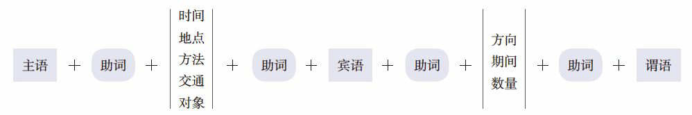
Figure 1: 日语句子基础结构
1.1.3 名词的分类
「の」可以代替所有的名词，它的下面又可以分为五个名词，每个名词下面还可以指具体的名词。有些语法的暧昧就是因为不清楚这五个名词分别代替了谁。
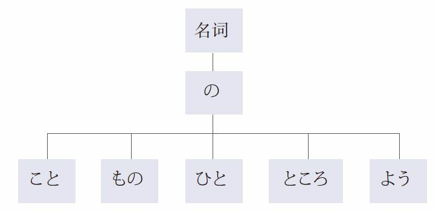
1.1.4 动词的结构
| 结构 | 词干 | ＋ | 附加 | ＋ | 后缀 |
|---|---|---|---|---|---|
| 表示 | 意思 | ＋ | 变形 | ＋ | 时态和形式（简体、敬体） |
| 示例 | 書 | ＋ | き | ＋ | ます |
1.1.5 动词的语法分类
| する | 「做」，可以代替大多数的动词，需根据上下文进行具体化。 |
|---|---|
| ある | 「有、在」，在高级语法中经常出现。 |
| なる | 「成为、是」 |
1.1.6 动词的变形规律分类
| 五段动词 | 动词后缀变化时，附加部分在 あ、い、う、え、お 五个段里发生变化。 |
|---|---|
| 肯定的简体结尾在 う 段上。 | |
| 一段动词 | 动词后缀变化时，附加部分保持同一个形式不发生变化。 |
| 肯定的简体的结尾是在 る。 | |
| 特殊动词 | 动词后缀变化时，词干的发音发生变化。 |
| 只有两个：サ 变动词「する（做）」 ，カ 变动词「来る（来）」。 |
一段动词又细分为:
| 上一段动词 | る前的附加部分或词干在い段上的动词。 |
|---|---|
| 下一段动词 | る前的附加部分或词干在え段上的动词。 |
注意：五段动词变成其他任何一种形式之后即成为一段动词，之后按照一段动词的变形规律进行变化。
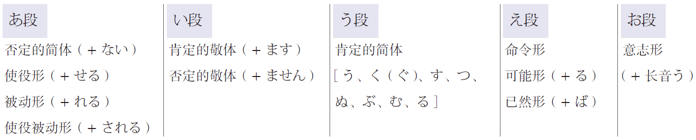
1.1.7 动词的性质分类
| 自动词 | 表示动作的结果或状态，对其他事物不产生影响。 |
|---|---|
| が + 自动词、形容词、形容动词、可能形、被动形 | |
| 他动词 | 表示动作本身，对其他事物产生影响。 |
| を + 他动词、使役形 |
对于成对的自他动词，如果使用了他动词而没有提及主语，则一定要弄清楚他动词的主语是谁；如果使用了自动词，则要避免提及做动作的人。如：
| 留学を決めました | （某人）决定了去留学 |
|---|---|
| 留学が決まりました | 留学（这件事）定下来了 |
1.1.8 动词的时态
| 一般现在时 | 表示一般性动作和将来的动作。 |
|---|---|
| 动词的辞书形（基本形） | |
| 现在进行时 | 表示正在进行的动作，和一段时间内持续的动作或状态。 |
| 动词的て形＋いる | |
| た形 | 表示动作完成或过去式（了），或相当于英语动词加 ed 来修饰名词（的）。 |
| 动词的た形 |
1.1.9 动词的形式
| 使役形 | 让、使 |
|---|---|
| 被动形 | 单纯的被动，或被动的心情 |
| 主谓统一 | |
| 敬语中的尊他语 | |
| 命令形 | 用于间接引用 |
| 用于文章中的引号中，且语气正式 | |
| 意思相当于「てください」 | |
| 可能形 | 有足够条件的「能」 |
| 会某项技能的「能」 | |
| 相当于补语，如「出不去，走得动」 | |
| 意志形 | 「想要做某事」的愿望，加「と」，如「しようと」 |
| 「让我们做某事」的建议，不加「と」，如「しよう」 | |
| 使役被动形 | 不情愿的动作 |
| 不自发的动作 | |
| 无意中的动作 |
1.1.10 谓语的中顿
即连接用言（谓语词）的形式，简称「连用形」。当数个谓语词连接在一起且不分大小只是并列时，放在前面的谓语词需要变成中顿的形式。
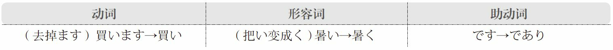
1.1.11 动词
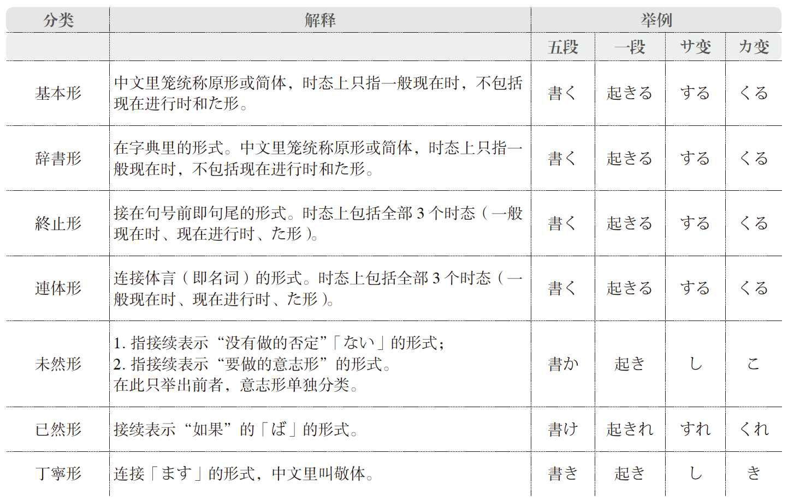
1.1.12 形容动词
形容动词本身是词干，不是独立的单词，用助动词「です」或「だ」作为谓语词，因此所有形容动词的变形均按照助动词「です」或「だ」的变形规律进行变化。
1.2 词语变形规律
1.2.1 一般现在时
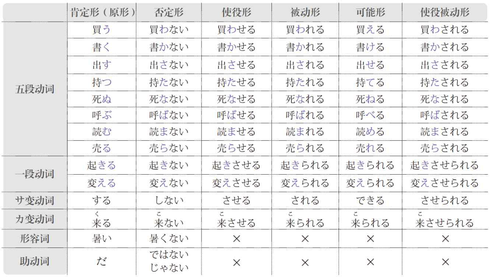
Figure 2: 一般现在时简体
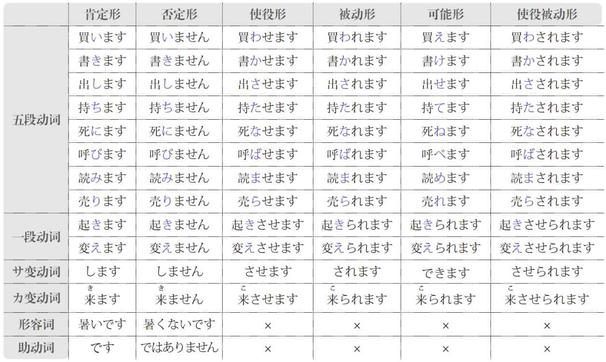
Figure 3: 一般现在时敬体
动词的使役形、被动形、可能形、使役被动形均为一段动词，其否定形为：
- 简体：去掉「る」加上「ない」。
- 敬体：去掉「ます」加上「ません」。
1.2.2 现在进行时
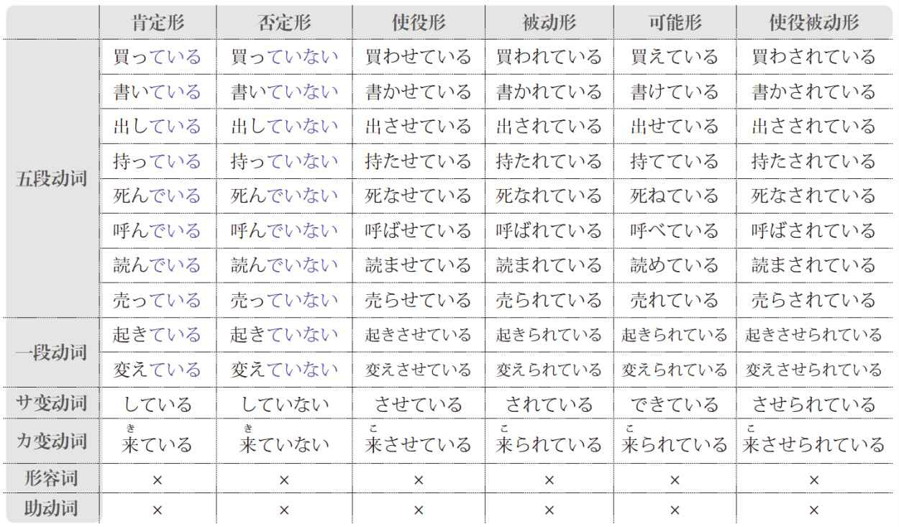
Figure 4: 现在进行时简体
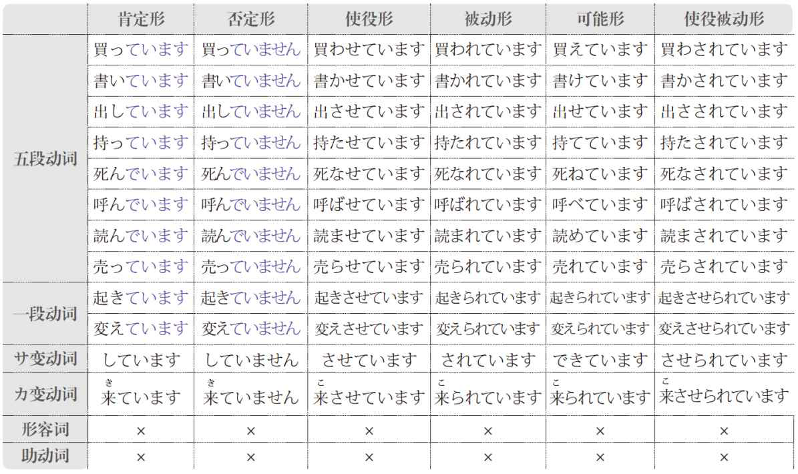
Figure 5: 现在进行时敬体
动词的使役形、被动形、可能形、使役被动形均为一段动词，其否定形为：
- 简体：去掉「いる」加上「いない」。
- 敬体：去掉「います」加上「いません」。
1.2.3 た形
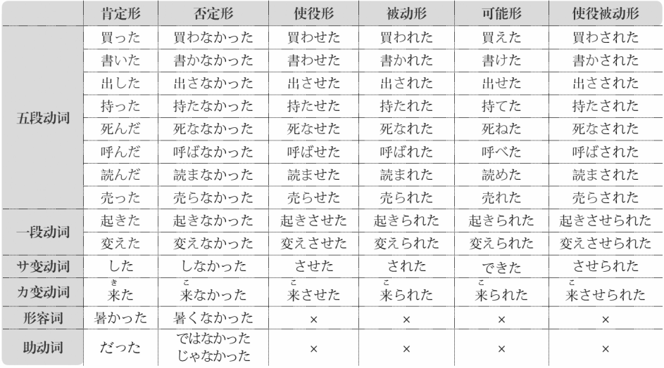
Figure 6: た形简体
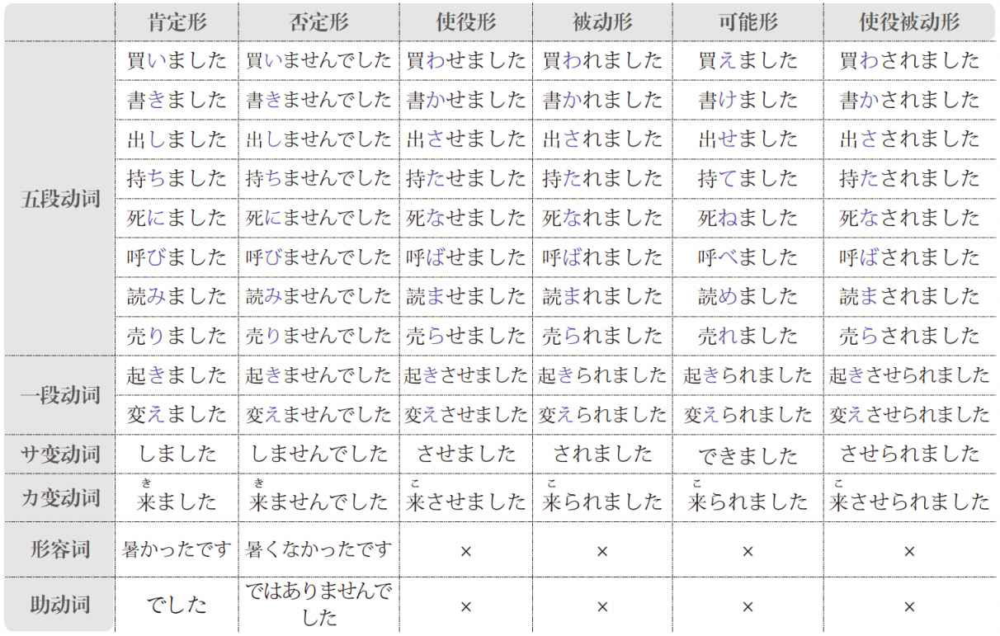
Figure 7: た形敬体
动词的使役形、被动形、可能形、使役被动形均为一段动词，其否定形为
- 简体：去掉「た」加上「なかった」。特殊：行く → 行った。
- 敬体：去掉「ました」加上「ませんでした」。
1.2.4 命令形
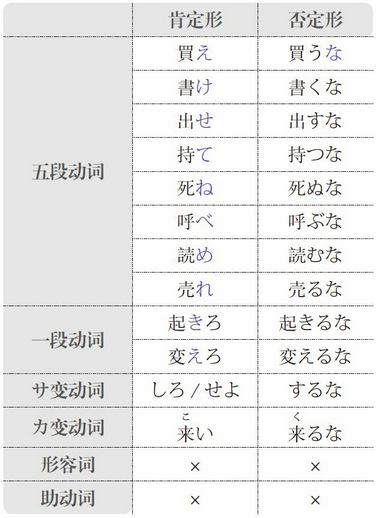
1.2.5 意志形
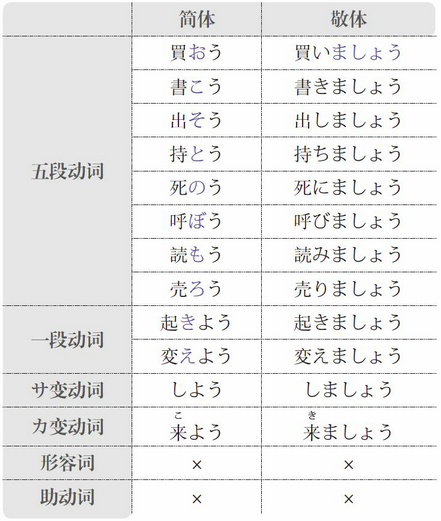
1.2.6 ば形
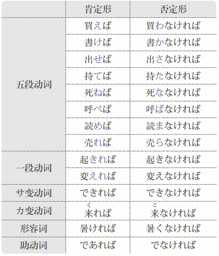
1.2.7 て形
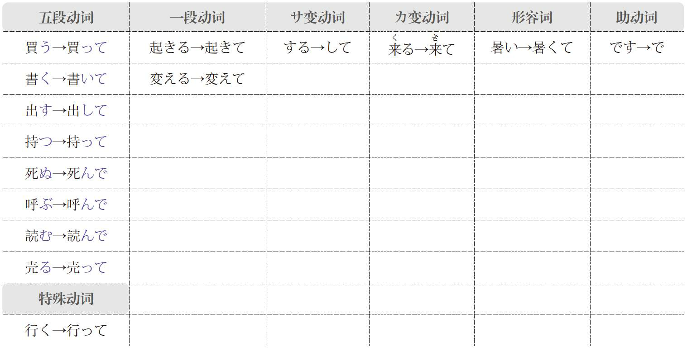
1.2.8 否定形

1.3 修饰语
1.3.1 定语
- 名词＋の
- 形容词简体（い、た）
- 形容动词＋な
- 动词た形
- 动词简体（う段）
- 动词敬体（ます）
1.3.2 状语
- 形容词＋く
- 形容动词＋に
- 拟声拟态词＋と
1.4 敬语
| お＋名词 | 训读名词，或日本造的音读汉字词，如「お電話」 |
|---|---|
| ご＋名词 | 中国造的汉字词，如「ご連絡」 |
1.4.1 一般规律
| 尊他 | お＋动词连用形＋になる |
|---|---|
| 自谦 | お＋动词连用形＋する |
1.4.2 特殊规律
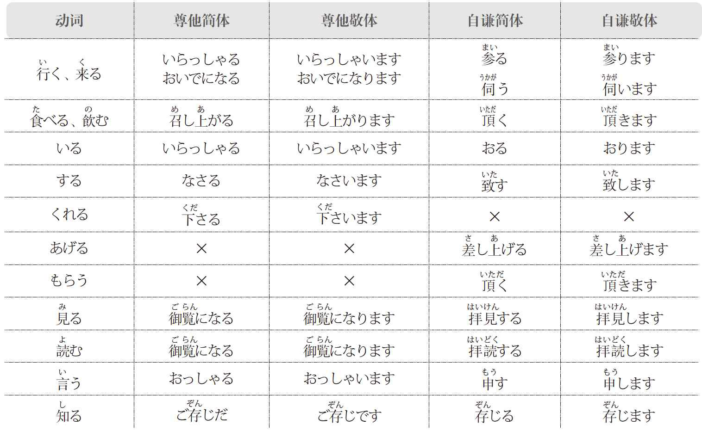
2 助词
2.1 は
| 1 | 名词＋は | 表示大主语，能带动长句子和数个谓语，与句尾的谓语相呼应。 |
|---|---|---|
| 2 | 助词、副词、数量词＋は | 强调其他助词、副词、数量词。 |
| 3 | 名词＋は | 表示对比。 |
| 1 | 荒川さんはイタリア語が上手です。 | 荒川先生意大利语好。 |
|---|---|---|
| 2 | 彼は事務所にはいません。 | 他不在事务所。 |
| 3 | スイカは好きだけど、桃は苦手です。 | 喜欢西瓜，但是不喜欢桃。 |
2.2 が
| 1 | 名词＋が | 表示小主语，不能带动长句子和数个谓语，不能添加过长的定语。 |
|---|---|---|
| 2 | 名词＋が | 强调主语。 |
| 3 | 谓语词＋が | 表示顺接，语气正式。 |
| 4 | 谓语词＋が | 表示转折，语气正式，「虽然…但是…」。 |
| 5 | 谓语词＋が | 表示省略，语气正式。 |
谓语是自动词、形容词、形容动词、动词的可能形、动词的被动形时，如果对应的主语不是大主语，则要用「が」。
| 1 | 荒川さんはイタリア語が上手です。 | 荒川先生意大利语好。 |
|---|---|---|
| 2 | 鵜飼先生はこの大学の学長です。 | 鹈饲老师才是（就是、正是）这所大学的校长。 |
| 3 | 失礼ですが、お名前を教えていただけませんか。 | 抱歉，能不能告诉我您的名字。 |
| 4 | ||
| 5 | こちらのほうが正しいと思いますが… | 我认为这个更正确… |
2.3 を
| 1 | 名词＋を | 表示宾语，谓语是他动词、动词的使役形。 |
|---|---|---|
| 2 | 名词＋を | 表示移动，谓语是表示移动的自动词。 |
| 1 | 字を五回書きました。 | 把字写了五遍。 |
|---|---|---|
| 2 | 鳥は空を飛んでいます。 | 鸟在空中飞。 |
2.4 の
| 1 | 名词＋の | 表示所属关系。 |
|---|---|---|
| 2 | 名词＋の | 表示（非专有）名词之间的接续。 |
| 3 | 名词＋の | 代替上文提到的名词。 |
| 4 | 名词＋の | 表示次小主语。 |
| 1 | 服のボタンがとれています。 | 衣服的扣子掉了。 |
|---|---|---|
| 2 | 私はこの会社の経理の三浦です。 | 我是这家公司的会计三浦。 |
| 3 | これは私の書類です。谷村さんのは明日持ってきます。 | 这是我的材料。谷村先生的明天拿来。 |
| 4 | 彼は、私が日本にいる時の一番仲のいい友達です。 | 他是我在日本时关系最好的朋友。 |
2.5 へ
| 1 | 名词＋へ | 表示方向。 |
|---|---|---|
| 2 | 名词＋へ | 表示对象，后面可以加「の」或「と」，但是不能加「に」。 |
| 1 | 東へ行ってください。 | 请往东走。 |
|---|---|---|
| 2 | これは恩師への手紙です。 | 这是给恩师的信。 |
2.6 に
| 1 | 名词＋に | 表示方向，方向感比「へ」弱。 |
|---|---|---|
| 2 | 名词＋に | 表示对象。 |
| 3 | 名词＋に | 表示目的。 |
| 4 | 名词＋に | 表示目标。 |
| 5 | 时间＋に | 表示时间点。 |
| 1 | 速く家に帰りたい。 | 想快点回家。 |
|---|---|---|
| 2 | 先生に相談してください。 | 请和老师商量。 |
| 3 | 駅まで友達を迎えに行く。 | 到车站去接朋友。 |
| 4 | 目標に向かって頑張る。 | 朝着目标努力。 |
| 5 | 朝六時半に起きる。 | 早晨六点半起床。 |
2.7 で
| 1 | 名词＋で | 表示地点。 |
|---|---|---|
| 2 | 名词＋で | 表示交通工具。 |
| 3 | 名词＋で | 表示方式。 |
| 4 | 名词＋で | 表示程度。 |
| 5 | 名词＋で | 表示状态。 |
| 6 | 名词＋で | 表示原因。 |
| 1 | これは学校で教わりました。 | 这是在学校学的。 |
|---|---|---|
| この塾ではたくさんの学生が習っています。 | 这个补习学校里（有）很多学生学习。 | |
| 2 | 今日は車で来ました。 | 今天是坐车来的。 |
| 3 | 日本語でどう言いますか。 | 用日语怎么说？ |
| 4 | 形式はある程度では決まっています。 | 形式在某种程度上是定了的。 |
| 5 | これでいいですか。 | 这样可以吗？ |
| 6 | 風邪で休んだ。 | 因为感冒休息了。 |
2.8 も
| 1 | 名词＋も | 「也、都」。 |
|---|---|---|
| 2 | 数量词＋も | 表示强调。 |
| 1 | あれもこれもしなければいけないから、疲れている。 | 这也不做不行，那也不做不行，所以累了。 |
|---|---|---|
| 2 | 何ヶ月も習っているのにまだ上手になれない。 | 学了好几个月，还是没有变拿手。 |
2.9 と
| 1 | 名词＋と | 表示并列，每一个并列部分后都要加「と」。 |
|---|---|---|
| 2 | 谓语词原形＋と | 表示强的、快速导致结果的条件，「一…就…」。 |
| 1 | 一つ目と二つ目とは、どう違いますか。 | 第一个和第二个有什么不一样？ |
|---|---|---|
| 2 | 長時間本を読むと目が疲れる。 | 一长时间读书，眼睛就会疲劳。 |
2.10 ば
| 动词ば形＋ば | 表示条件，语气正式，但比「と」的条件性弱。 |
| 余裕があれば、また何かを習いたい。 | 如果有富余，想再学点什么。 |
2.11 か
| 1 | 任何词＋か | 表示疑问，句子当中只要有疑问词就必须加「か」。 |
|---|---|---|
| 1 | 任何词＋か | 表示不确定，「不知道」。 |
| 1 | 来るかどうかまだわからない。 | 来还是不来还不知道。 |
|---|---|---|
| 2 | いつかまた会えるよ。 | 不知道什么时候再见面。 |
2.12 や
| 1 | 任何词＋や | 表示断定，用于古语和方言 |
|---|---|---|
| 2 | 任何词＋や | 表示不确定，相当于「か」。 |
| 1 | これや。 | 是这个。 |
|---|---|---|
| 2 | 君よ知るや。 | 你知道吗？ |
2.13 し
| 谓语词＋し | 表示同等重要，「又」，每一个并列部分后都要加「し」。 |
| 結果（けっか）もまだわからないし、ほっとこう。 | 又不知道结果怎样，别管它。 |
2.14 から
| 名词＋から | 表示起点，「从」。 |
| 田中さんから得た情報は確実だ。 | 从田中先生那里得到的信息是准确的。 |
2.15 まで
| 1 | 名词＋まで | 表示终点，「到」。 |
|---|---|---|
| 2 | 任何词＋まで | 表示到什么地步。 |
| 1 | 部屋の隅から隅まで探した。 | 房间里每个角落都找过了。 |
|---|---|---|
| 2 | そこまでする必要はない。 | 没必要做到那个地步。 |
2.16 より
| 1 | 任何词＋より | 表示比较。 |
|---|---|---|
| 2 | 人称＋より | 表示发信人和赠送人等，比「から」语气正式。 |
| 1 | 今日は昨日より暑い。 | 今天比昨天热。 |
|---|---|---|
| 2 | 田中様より鈴木様宛てのてがみ | 田中先生给铃木先生的信 |
2.17 くらい
| 1 | 任何词＋くらい | 表示程度高到了某种地步。 |
|---|---|---|
| 2 | 任何词＋くらい | 表示程度刚好在某种地步。 |
| 3 | 任何词＋くらい | 表示程度低到了某种地步。 |
| 4 | 时间＋くらい | 表示大约的时间点或持续时间。 |
也可以读作浊音「ぐらい」。
| 1 | 電話の音が聞こえないくらいだ。 | （周围吵到）电话的声音听不见了。 |
|---|---|---|
| 2 | 歩いて行けるくらい近いです。 | 近到可以走着去。 |
| 3 | こんな事くらい子供でも知っている。 | 这种事情（简单到）小孩子都知道。 |
| 4 | 明日の午後三時くらい来てください。 | 请明天下午三点左右来。 |
| 昨日友達に三時間くらい待てされた。 | 昨天朋友让我等了大约三个小时。 |
2.18 ころ
| 时间点＋ころ | 表示大约的时间点。 |
也可以读作浊音「ごろ」。
| 明日何時ごろ伺えばよろしいでしょうか。 | 明天几点左右拜访好呢？ |
2.19 ほど
| 1 | 任何词＋ほど | 表示程度高到了某种地步。 |
|---|---|---|
| 2 | 时间段＋ほど | 表示大约的时间段。 |
| 1 | 舌がとろけるほどおいしい。 | 好吃到舌头（都）融化了。 |
|---|---|---|
| 2 | 講義は一時間ほど延びた。 | 课程拖延了一小时左右。 |
2.20 だけ
| 1 | これ／それ／あれ＋だけ | 表示程度高到了某种地步，「这么、那么」。 |
|---|---|---|
| 2 | 任何词＋だけ | 表示程度达到相应、符合的地步。 |
| 3 | 任何词＋だけ | 表示仅限于。 |
| 1 | あれだけ残業をしていれば、 | 如果加那么多班的话， |
|---|---|---|
| 2 | 大学に受かるだけの学力をつけるのは難しい。 | 具备进入大学相应的学力是困难的。 |
| 3 | この商品は冬にだけ発売される。 | 这件商品只在冬天售卖。 |
2.21 のみ
| 任何词＋のみ | 表示仅限于，语气比「だけ」正式。 |
| この奨学金は日本人学生のみ応募できる。 | 这个奖学金只有日本学生可以申请。 |
2.22 しか
| 动词原形／名词＋しか | 表示仅限于，必须接否定，「除了……以外其他都不」。 |
| 外国語は、フランス語しかできない。 | 外语除了法语以外都不会。 |
2.23 ばかり
| 名词／动词原形／动词て形＋ばかり | 「全是、净是」。 |
口语可以读作「ばっかり」。
| 休日は出かけたくない、どこへ行っても、人ばっかりです。 | 休息日不想出去，不管去哪，全都是人。 |
2.24 すら
| 名词／助词＋すら | 表示让步，「连…都…」。 |
| 子供すら分かることなのに、どうして大人のあなたが分からないの。 | 连孩子都明白的事，为什么（作为）大人的你不明白？ |
2.25 さえ
| 1 | 名词／助词＋さえ | 表示让步，「连…都…」，语气比「すら」弱。 |
|---|---|---|
| 2 | 名词／助词＋さえば | 「只要…就…」 |
| 1 | 社長にさえ対応のできない問題だから、 | 连对于社长都无法应对的问题， |
|---|---|---|
| 2 | 反則さえしなければ、勝っていたのに。 | 只要不犯规，（那时候）就（已经）赢了。 |
2.26 こそ
| 名词＋こそ | 「才是，正是，的确」。 |
| こちらこそよろしくお願いします。 | 我才是请您多关照。 |
|---|---|
| 子供のために思えばこそ、 | 正是为了孩子着想， |
| 彼は言葉遣いこそ悪いが、本当は心の優しい人だよ。 | 他说话方式的确不好，其实是一个心地善良的人。 |
2.27 から
| 谓语词＋から | 表示主观原因。 |
2.28 ので
| 动词／形容词＋ので | 表示客观原因。 |
| 名词／形容动词＋なので |
2.29 のに
| 动词／形容词＋のに | 表示完全转折，语气惊讶或消极。 |
| 名词／形容动词＋なのに |
| 彼女は日本語を半年しか習っていないのに、もうこんなに喋れるのよ。 | 她才学了半年日语，已经这么能说了。 |
2.30 ても
| 动词て形／形容词て形＋ても | 表示让步转折，「即使…」。 |
| 名词／形容动词＋でも |
| 彼に聞いても分からないと思う。 | 觉得即使问他也不明白。 |
|---|---|
| 忙しくても体を鍛えています。 | 即使忙也在锻炼身体。 |
| 嫌でもしょうがない。 | 即使讨厌也没有办法。 |
| 簡単なことでも、まじめに対応しなければならない。 | 即使简单的事情，不认真对待也是不行的。 |
2.31 とも
| 动词意志形＋とも | 表示让步转折，「即使…」。 |
| けれども／いえども |
| 留学しようとも、そのための資金がまだ集まらない。 | 即使要留学，为此的资金还筹集不到。 |
|---|---|
2.32 たら
| 动词た形＋たら | 表示条件，语气比「ば」柔和。 |
| 后句为过去时时，通常表示某事与预期相反，「结果…」。 |
| 家に着いたら連絡してね。 | 到家之后联系哦。 |
|---|---|
| 行ったら、彼はいなかった。 | 去了，（结果）他没在。 |
| 窓を開けたら雪が降っていた。 | 打开了窗户，（结果）下雪了。 |